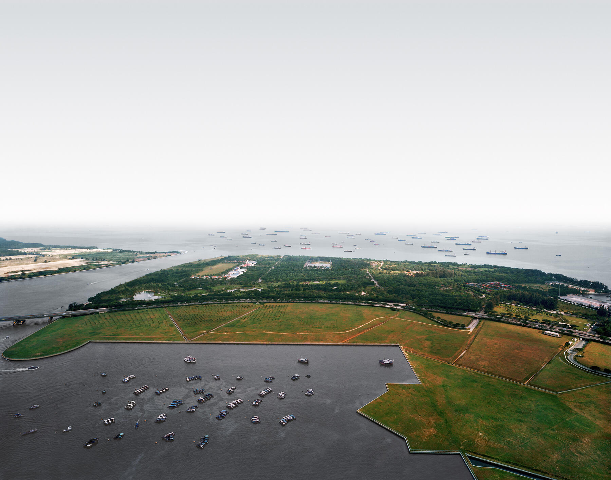

404
Page not found
Why not take this opportunity to pause for a moment?
<a href="https://celer.bandcamp.com/album/you-and-i-cant-ever-change-expanded">You and I Can't Ever Change (Expanded) by Celer</a>

"Singapore Port", by Andreas Gursky